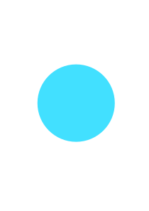

About me
About me
I am a current Junior at the University of Alabama pursuing a degree in Management Information Systems and a minor in Business Cybersecurity. I first started programming in college, and quickly found a passion in the tech industry. Since then, I have enjoyed working on side projects and discovering new technologies while completing my coursework. In addition to my studies, I am also a varsity athlete on both the Cross Country and Track and Field teams here at Alabama.